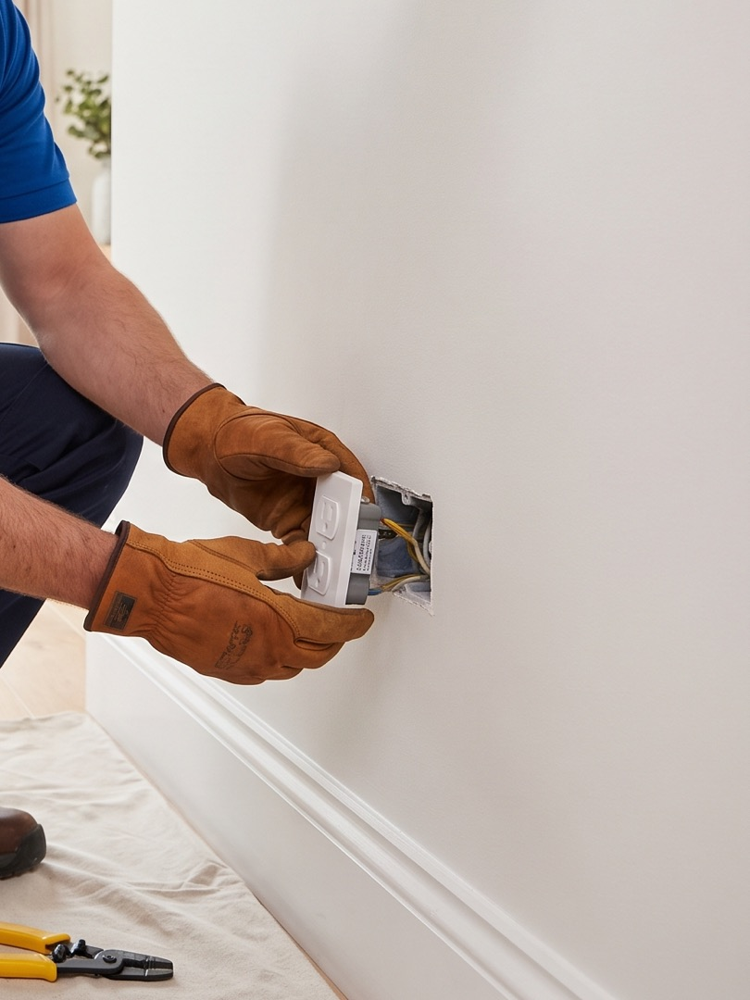

Panneau électrique
Remplacement, mise à niveau à 100 A ou 200 A, ajout de circuits, entrée électrique et mât.
Électricien résidentiel et commercial à Saint-Ambroise-de-Kildare. Panneaux, filage, éclairage et mise aux normes. Membre de la CMEQ.
450 756-7111« On refait la cuisine, il faut tout repasser. »
« Le vendeur a parlé d'un panneau à changer. »
« La prise derrière le divan est chaude. »
« Il reste un plafonnier à poser depuis deux ans. »
Aucune de ces quatre-là n'est un cas spécial. C'est la semaine normale d'un électricien. Lexma prend ces appels-là, et ceux des commerces aussi.
Ce qu'il y a dans vos murs, vous ne le voyez pas.
Ce que vous voyez
Cuisine neuveSans DDFT
Sous-sol finiBoîte murée
Tout marchePanneau plein
Maison de 1970Fils sans terre
Une rallongeCircuit de trop
Aucune odeurFil desserré
Ce qu'on trouve derrière
Remplacement, mise à niveau à 100 A ou 200 A, ajout de circuits, entrée électrique et mât.
Cuisine, salle de bain, sous-sol, agrandissement. Refaire le filage d'une pièce ou d'une maison complète.
Encastrés, luminaires, gradateurs, éclairage sous-armoires et éclairage extérieur.
Ajout de prises, disjoncteurs de fuite à la terre (DDFT) pour la cuisine, la salle de bain et l'extérieur, prises 240 V pour sécheuse, cuisinière ou spa.
Correction de sorties sans mise à la terre, de boîtes de jonction inaccessibles et de raccords non conformes, avant une vente ou après une inspection.
Avertisseurs de fumée et de monoxyde de carbone raccordés et interconnectés.
Éclairage, prises, circuits dédiés et raccordement d'équipement, en rénovation de local comme en aménagement.
Remplacement, ajout de panneaux, augmentation de capacité et nouveaux circuits pour de l'équipement qui arrive.
Correction de problèmes, remplacement de composantes et travaux correctifs après une inspection.

Au Québec, les travaux d'électricité sont réservés aux entrepreneurs membres de la Corporation des maîtres électriciens du Québec. Lexma Électrique en est membre.
Résidentiel et commercial. Une maison, un logement ou un local : le Code de construction du Québec, chapitre V, Électricité, est le même, et la licence aussi.
Licence RBQ 5767-5993-01
Décrivez les travaux, joignez vos photos, et on vous revient avec une soumission.
Ou écrivez directement à gestion@lexma-electrique.com, ou appelez au 450 756-7111.
Ce que nous faisons de vos renseignements : politique de confidentialité. Ce site ne dépose aucun témoin.